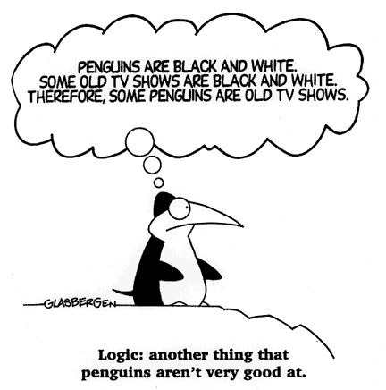

Logic for PyRes

PRP, FOF, ATP, LC, SPTs
Propositional Logic
(
topics
)
The logic
An example
In TPTP format
First-order Logic
(
topics
)
The logic
An example
In TPTP format
What is ATP, Really?
(
topics
)
An example
Logical consequence
Soundness and completeness
Model finding
Logical Consequence
(
topics
)
Interpretation
Models, etc.
Definition
By inference
Satisfiability Preserving Transformations
(
topics
)
LC by UNS
SPTs
LC by SPTs
FOL, CNF, BR&F
The Language of (First-order) Logic
(
topics
)
Symbols, terms, atoms
Formulae, literals, ground
Equality
Clause Normal Form
(
topics
)
The form
Transforming
(Non-)Horn clauses
It's an SPT!
Logical consequence
Two Inference Rules
(
topics
)
Substitutions and unification
Binary resolution
Factoring
ATP, ANL
Saturation
Search
ANL loop
The End - Any Questions?